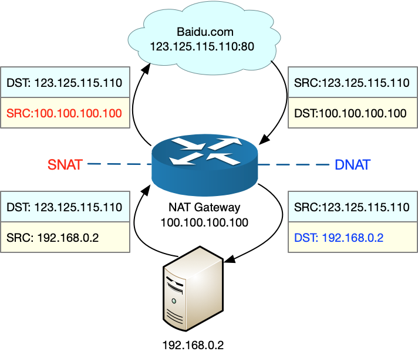
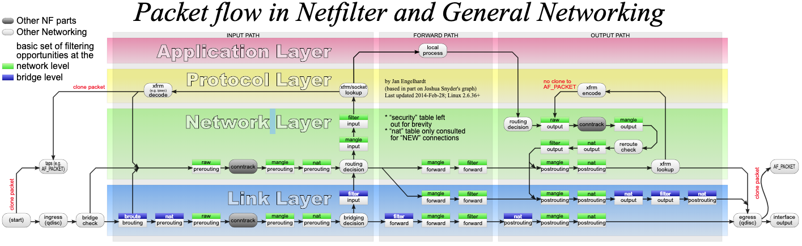

另一个可能导致网络延迟的因素，即网络地址转换（Network Address Translation），缩写为 NAT。
NAT 原理
NAT 技术可以重写 IP 数据包的源 IP 或者目的 IP，被普遍地用来解决公网 IP 地址短缺的问题。它的主要原理就是，网络中的多台主机，通过共享同一个公网 IP 地址，来访问外网资源。同时，由于 NAT 屏蔽了内网网络，自然也就为局域网中的机器提供了安全隔离。
既可以在支持网络地址转换的路由器（称为 NAT 网关）中配置 NAT，也可以在 Linux 服务器中配置 NAT。如果采用第二种方式，Linux 服务器实际上充当的是“软”路由器的角色。
NAT 的主要目的，是实现地址转换。根据实现方式的不同，NAT 可以分为三类：
- 静态 NAT，即内网 IP 与公网 IP 是一对一的永久映射关系；
- 动态 NAT，即内网 IP 从公网 IP 池中，动态选择一个进行映射；
- 网络地址端口转换 NAPT（Network Address and Port Translation），即把内网 IP 映射到公网 IP 的不同端口上，让多个内网 IP 可以共享同一个公网 IP 地址。
NAPT 是目前最流行的 NAT 类型，我们在 Linux 中配置的 NAT 也是这种类型。而根据转换方式的不同，我们又可以把 NAPT 分为三类。
- 第一类是源地址转换 SNAT，即目的地址不变，只替换源 IP 或源端口。SNAT 主要用于，多个内网 IP 共享同一个公网 IP ，来访问外网资源的场景。
- 第二类是目的地址转换 DNAT，即源 IP 保持不变，只替换目的 IP 或者目的端口。DNAT 主要通过公网 IP 的不同端口号，来访问内网的多种服务，同时会隐藏后端服务器的真实 IP 地址。
- 第三类是双向地址转换，即同时使用 SNAT 和 DNAT。当接收到网络包时，执行 DNAT，把目的 IP 转换为内网 IP；而在发送网络包时，执行 SNAT，把源 IP 替换为外部 IP。
双向地址转换，其实就是外网 IP 与内网 IP 的一对一映射关系，所以常用在虚拟化环境中，为虚拟机分配浮动的公网 IP 地址。
为了帮你理解 NAPT，我画了一张图。我们假设：
- 本地服务器的内网 IP 地址为 192.168.0.2；
- NAT 网关中的公网 IP 地址为 100.100.100.100；
- 要访问的目的服务器 baidu.com 的地址为 123.125.115.110。 那么 SNAT 和 DNAT 的过程，就如下图所示：

从图中，你可以发现：
- 当服务器访问 baidu.com 时，NAT 网关会把源地址，从服务器的内网 IP 192.168.0.2 替换成公网 IP 地址 100.100.100.100，然后才发送给 baidu.com；
- 当 baidu.com 发回响应包时，NAT 网关又会把目的地址，从公网 IP 地址 100.100.100.100 替换成服务器内网 IP 192.168.0.2，然后再发送给内网中的服务器。
iptables 与 NAT
Linux 内核提供的 Netfilter 框架，允许对网络数据包进行修改（比如 NAT）和过滤（比如防火墙）。在这个基础上，iptables、ip6tables、ebtables 等工具，又提供了更易用的命令行接口，以便系统管理员配置和管理 NAT、防火墙的规则。
其中，iptables 就是最常用的一种配置工具。要掌握 iptables 的原理和使用方法，最核心的就是弄清楚，网络数据包通过 Netfilter 时的工作流向，下面这张图就展示了这一过程。

在这张图中，绿色背景的方框，表示表（table），用来管理链。Linux 支持 4 种表，包括 filter（用于过滤）、nat（用于 NAT）、mangle（用于修改分组数据） 和 raw（用于原始数据包）等。
跟 table 一起的白色背景方框，则表示链（chain），用来管理具体的 iptables 规则。每个表中可以包含多条链，比如：
- filter 表中，内置 INPUT、OUTPUT 和 FORWARD 链；
- nat 表中，内置 PREROUTING、POSTROUTING、OUTPUT 等。
灰色的 conntrack，表示连接跟踪模块。它通过内核中的连接跟踪表（也就是哈希表），记录网络连接的状态，是 iptables 状态过滤（-m state）和 NAT 的实现基础。
iptables 的所有规则，就会放到这些表和链中，并按照图中顺序和规则的优先级顺序来执行。
at 表内置了三个链：
- PREROUTING，用于路由判断前所执行的规则，比如，对接收到的数据包进行 DNAT。
- POSTROUTING，用于路由判断后所执行的规则，比如，对发送或转发的数据包进行 SNAT 或 MASQUERADE。
- OUTPUT，类似于 PREROUTING，但只处理从本机发送出去的包。
SNAT
SNAT 需要在 nat 表的 POSTROUTING 链中配置。我们常用两种方式来配置它。
第一种方法，是为一个子网统一配置 SNAT，并由 Linux 选择默认的出口 IP。这实际上就是经常说的 MASQUERADE：
$ iptables -t nat -A POSTROUTING -s 192.168.0.0/16 -j MASQUERADE
第二种方法，是为具体的 IP 地址配置 SNAT，并指定转换后的源地址：
$ iptables -t nat -A POSTROUTING -s 192.168.0.2 -j SNAT --to-source 100.100.100.100
DNAT
DNAT 需要在 nat 表的 PREROUTING 或者 OUTPUT 链中配置，其中， PREROUTING 链更常用一些（因为它还可以用于转发的包）。
$ iptables -t nat -A PREROUTING -d 100.100.100.100 -j DNAT --to-destination 192.168.0.2
双向地址转换
双向地址转换，就是同时添加 SNAT 和 DNAT 规则，为公网 IP 和内网 IP 实现一对一的映射关系，即：
$ iptables -t nat -A POSTROUTING -s 192.168.0.2 -j SNAT --to-source 100.100.100.100
$ iptables -t nat -A PREROUTING -d 100.100.100.100 -j DNAT --to-destination 192.168.0.2
使用 iptables 配置 NAT 规则时，Linux 需要转发来自其他 IP 的网络包，所以你千万不要忘记开启 Linux 的 IP 转发功能。
可以执行下面的命令，查看这一功能是否开启。如果输出的结果是 1，就表示已经开启了 IP 转发：
$ sysctl net.ipv4.ip_forward
net.ipv4.ip_forward = 1
如果还没开启，你可以执行下面的命令，手动开启：
$ sysctl -w net.ipv4.ip_forward=1
net.ipv4.ip_forward = 1
为了避免重启后配置丢失，不要忘记将配置写入 /etc/sysctl.conf 文件中：
$ cat /etc/sysctl.conf | grep ip_forward
net.ipv4.ip_forward=1
小结
NAT 技术能够重写 IP 数据包的源 IP 或目的 IP，所以普遍用来解决公网 IP 地址短缺的问题。它可以让网络中的多台主机，通过共享同一个公网 IP 地址，来访问外网资源。同时，由于 NAT 屏蔽了内网网络，也为局域网中机器起到安全隔离的作用。
Linux 中的 NAT ，基于内核的连接跟踪模块实现。所以，它维护每个连接状态的同时，也会带来很高的性能成本。